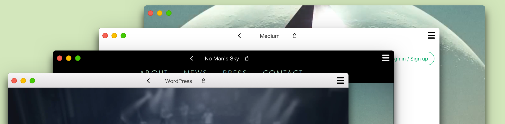
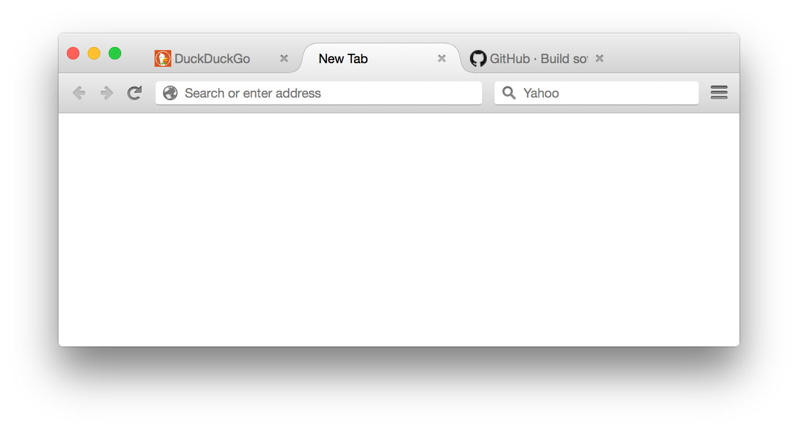
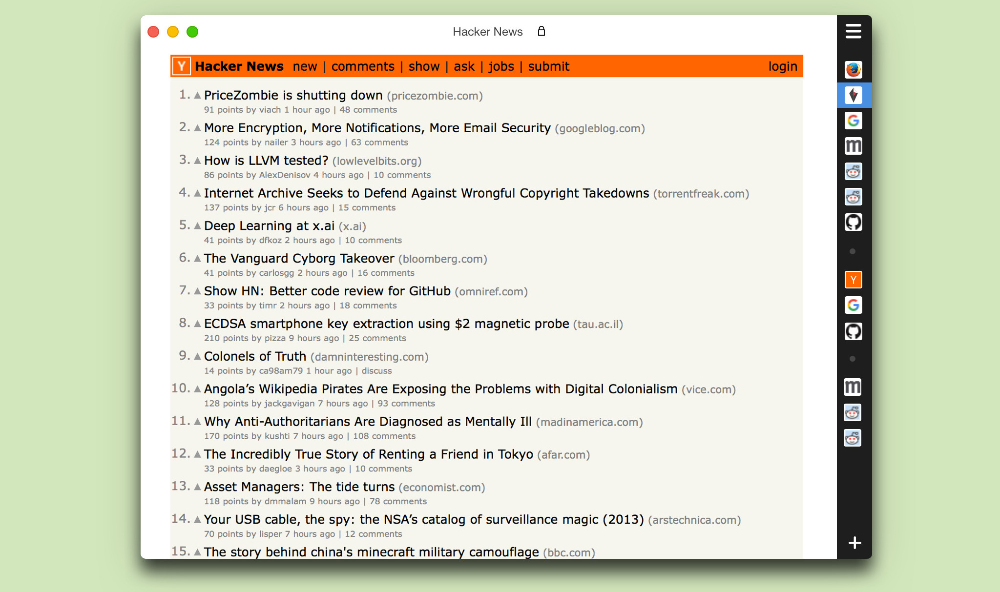
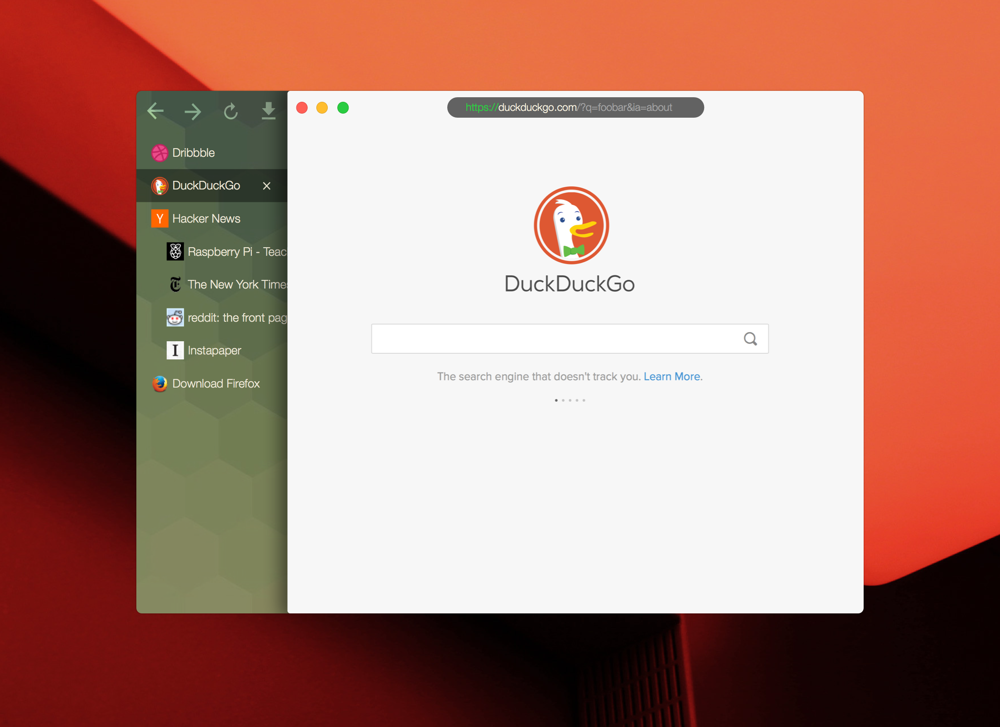

browser.html & Servo

Topbar approach
Traditional approach, with funny colors
Bottom tabs.

Firefox clone.

Tabs on the right. Sidebar folded and pinned.

Tabs on the left. Sidebar unfolded.
Tabs on the right. Sidebar folded and pinned.